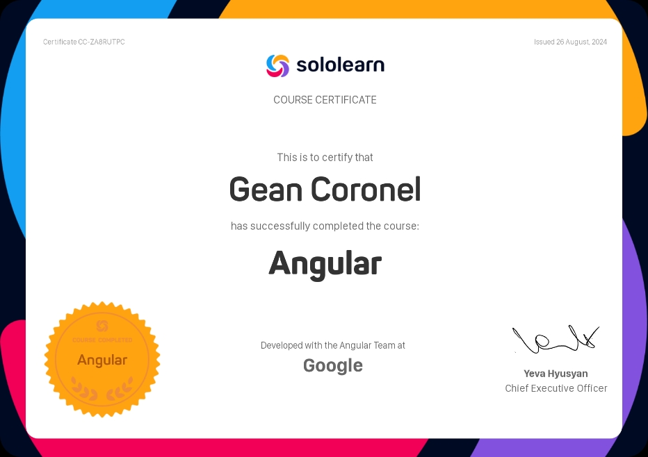

Mis Servicios
Soy estudiante de Ingeniería de Sistemas con interés en el desarrollo de software, la gestión de bases de datos y la seguridad informática. Estoy en constante aprendizaje y busco aplicar mis conocimientos en proyectos que aporten soluciones tecnológicas eficientes. En mi portafolio también encontrarás certificados que respaldan mi formación y habilidades.
Tecnologias para todos
Este certificado acredita la finalización del curso "Tecnología para Todos" en la plataforma SoloLearn, destacando el desarrollo de habilidades fundamentales en el uso y comprensión de herramientas tecnológicas.

Angular
He obtenido un certificado en Angular a través de SoloLearn, lo que me ha permitido fortalecer mis conocimientos en este poderoso framework para el desarrollo de aplicaciones web dinámicas. Esta formación refuerza mi habilidad para crear interfaces interactivas y eficientes.

Desarrollador web
He completado satisfactoriamente el curso de introducción a HTML en SoloLearn, adquiriendo conocimientos fundamentales sobre la estructura y sintaxis del lenguaje de marcado para la creación de páginas web. Durante el curso, aprendí a utilizar etiquetas, atributos y principios básicos del diseño web